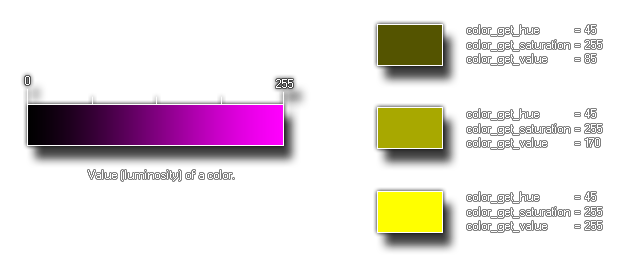

colour_get_value(col);
| Argumento | Descripción |
|---|---|
| col | El color para verificar |
Devoluciones: Real
Esta función devolverá el valor (luminosidad) del color dado. Esta es la cantidad de "luz" que se mezcla en el color final y es parte del método de matiz, saturación y valor para definir un color. La siguiente imagen ilustra cómo este valor corresponde a la escala de color HSV: 
col = make_colour_hsv(random(255), 255, colour_get_value(c_teal));
El código anterior obtiene el valor utilizado para hacer que el color sea constante "c_teal" y luego usa ese valor para establecer un color aleatorio que tenga la misma luminosidad, almacenando el color resultante en la variable "col".